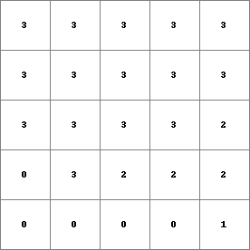
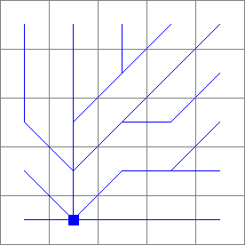

catchment¶
catchment
Catchment(s) of one or more specified cells
Result = catchment(ldd, points)
- ldd
- spatial ldd
- points
- spatial boolean, nominal, ordinal
- Result
- spatial type of points
Operation¶
The local drain direction for each cell is defined by ldd. For each non zero value on points its catchment is determined and all cells in its catchment are assigned this non zero value. This procedure is performed for all cells with a non zero value on points, but there is one important exception: subcatchments are not identified: if the catchment of a non zero cell on points is a part of another (larger) catchment of a non zero cell on points, the cells in this smaller subcatchment are assigned the value of the larger enclosing catchment.
The operation is performed as follows: for each cell its downstream path is determined which consists of the consecutively neighbouring downstream cells on ldd. On Result each cell is assigned the non zero points cell value which is on its path and which is most far downstream. If all cells on the downstream path of a cell have a value 0 on points a 0 is assigned to the cell on Result.
Notes¶
A cell with missing value on ldd is assigned a missing value on Result.
Group¶
This operation belongs to the group of Neighbourhood operators; local drain directions
See Also¶
Examples¶
- • pcrcalcbindingResult = Result.map;Ldd = Ldd.map;Points = Points.map;initialreport Result = catchment(Ldd,Points);• pythonLdd = readmap(“Ldd.map”)Points = readmap(“Points.map”)Result = catchment(Ldd,Points)
Result.map Ldd.map Points.map  